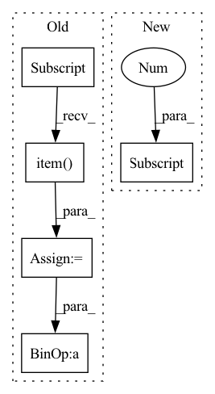

Pattern ID :41380

Before Change
def inference_step(self, cache_metadata: torch.IntTensor, *inputs: torch.Tensor) -> Tuple[torch.Tensor, ...]:
num_heads, head_dim = self.module.self_attention.num_heads, self.module.self_attention.head_dim
with torch.inference_mode():
attention_cache_handle = int(cache_metadata[0, 0].item())
prefix_length = int(cache_metadata[0, 1].item())
(hidden_states, hypo_ids) = inputs
assert (
hidden_states.ndim == 3
), "expected hidden states to be 3-dimensional: [batch_size, seq_len, hid_size]"
with self.memory_cache.use_cache(attention_cache_handle) as cache:
batch_size = cache.shape[1]
max_length = cache.numel() // (2 * batch_size * head_dim * num_heads)
assert isinstance(self.module, WrappedBloomBlock) and cache.shape[0] == 2 and cache.ndim == 3
if not is_dummy(hypo_ids):
assert hypo_ids.shape[0] == cache.shape[1]
After Change
with self.memory_cache.use_cache(cache_handle) as cache:
batch_size = cache.shape[2]
max_length = cache.shape[-1] // (head_dim * num_heads)
assert isinstance(self.module, WrappedBloomBlock) and cache.shape[1] == 2 and cache.ndim == 4
if not is_dummy(hypo_ids):
assert hypo_ids.shape[0] == batch_size
In pattern: SUPERPATTERN
Frequency: 4
Non-data size: 5
Instances
Fragment ID: 116444624
Project Name: bigscience-workshop/petals
Commit Name: 7cdc57a04b38d6e75138e6e8d53a5b4dd24e03df
Time: 2022-12-15
Author: borzunov.alexander@gmail.com
File Name: src/petals/server/backend.py
M Class Name: TransformerBackend
N Class Name: TransformerBackend
M Method Name: inference_step(4)
N Method Name: inference_step(2)
M Parent Class: ModuleBackend
N Parent Class: ModuleBackend
M File Name: src/petals/server/backend.py
N File Name: src/petals/server/backend.py
M Start Line: 54
M End Line: 69
N Start Line: 52
N End Line: 69
'>
Before Change
params = data[ChannelEnum.PARAMS]
terrain_resolution = params[0].item()
robot_position_x = params[1].item()
robot_position_y = params[2].item()
sample_grid = data[ChannelEnum.OCC_DATA_UM]
// distance of every pixel from the robot
lin_x = np.arange(start=-sample_grid.shape[0] / 2, stop=sample_grid.shape[0] / 2, step=1) * terrain_resolution
lin_y = np.arange(start=-sample_grid.shape[1] / 2, stop=sample_grid.shape[1] / 2, step=1) * terrain_resolution
off_y, off_x = np.meshgrid(lin_x, lin_y)
dist_x = off_x - robot_position_x
dist_y = off_y - robot_position_y
dist_p2_norm = np.sqrt(np.square(dist_x) + np.square(dist_y))
stdev = transform_config["stdev"]
After Change
lin_y = np.arange(start=-sample_grid.shape[1] / 2, stop=sample_grid.shape[1] / 2, step=1) * res_grid[1]
off_y, off_x = np.meshgrid(lin_x, lin_y)
dist_x = off_x - robot_position[0]
dist_y = off_y - robot_position[1]
dist_p2_norm = np.sqrt(np.square(dist_x) + np.square(dist_y))
stdev = transform_config["stdev"]
'>
Fragment ID: 116444610
Project Name: mstoelzle/solving-occlusion
Commit Name: 48e9a4073e48799689c0f8e2548ddc0deeddcacc
Time: 2021-01-06
Author: maximilian@stoelzle.ch
File Name: src/datasets/transforms.py
M Class Name: Transformer
N Class Name: Transformer
M Method Name: range_data_uncertainty(3)
N Method Name: range_data_uncertainty(3)
M Parent Class:
N Parent Class:
M File Name: src/datasets/transforms.py
N File Name: src/datasets/transforms.py
M Start Line: 225
M End Line: 238
N Start Line: 223
N End Line: 234
'>
Before Change
params = data[ChannelEnum.PARAMS]
terrain_resolution = params[0].item()
robot_position_x = params[1].item()
robot_position_y = params[2].item()
sample_grid = data[ChannelEnum.OCC_DEM]
// distance of every pixel from the robot
lin_x = np.arange(start=-sample_grid.shape[0] / 2, stop=sample_grid.shape[0] / 2, step=1) * terrain_resolution
lin_y = np.arange(start=-sample_grid.shape[1] / 2, stop=sample_grid.shape[1] / 2, step=1) * terrain_resolution
off_y, off_x = np.meshgrid(lin_x, lin_y)
dist_x = off_x - robot_position_x
dist_y = off_y - robot_position_y
dist_p2_norm = np.sqrt(np.square(dist_x) + np.square(dist_y))
stdev = transform_config["stdev"]
After Change
lin_y = np.arange(start=-sample_grid.shape[1] / 2, stop=sample_grid.shape[1] / 2, step=1) * res_grid[0]
off_y, off_x = np.meshgrid(lin_x, lin_y)
dist_x = off_x - robot_position[0]
dist_y = off_y - robot_position[1]
dist_p2_norm = np.sqrt(np.square(dist_x) + np.square(dist_y))
stdev = transform_config["stdev"]
'>
Fragment ID: 116444612
Project Name: mstoelzle/solving-occlusion
Commit Name: 48e9a4073e48799689c0f8e2548ddc0deeddcacc
Time: 2021-01-06
Author: maximilian@stoelzle.ch
File Name: src/datasets/transforms.py
M Class Name: Transformer
N Class Name: Transformer
M Method Name: range_adjusted_white_noise(3)
N Method Name: range_adjusted_white_noise(3)
M Parent Class:
N Parent Class:
M File Name: src/datasets/transforms.py
N File Name: src/datasets/transforms.py
M Start Line: 55
M End Line: 68
N Start Line: 55
N End Line: 66